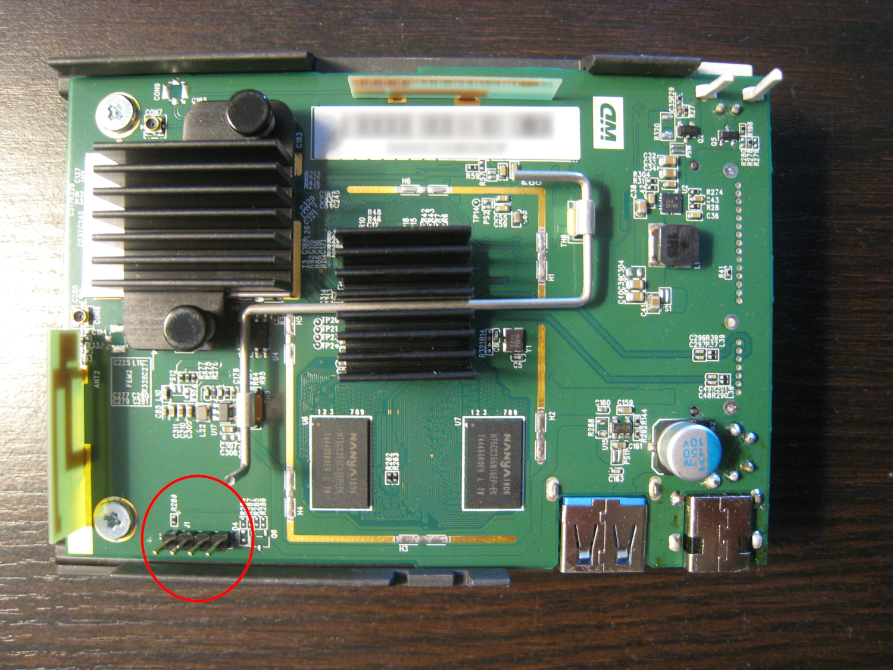
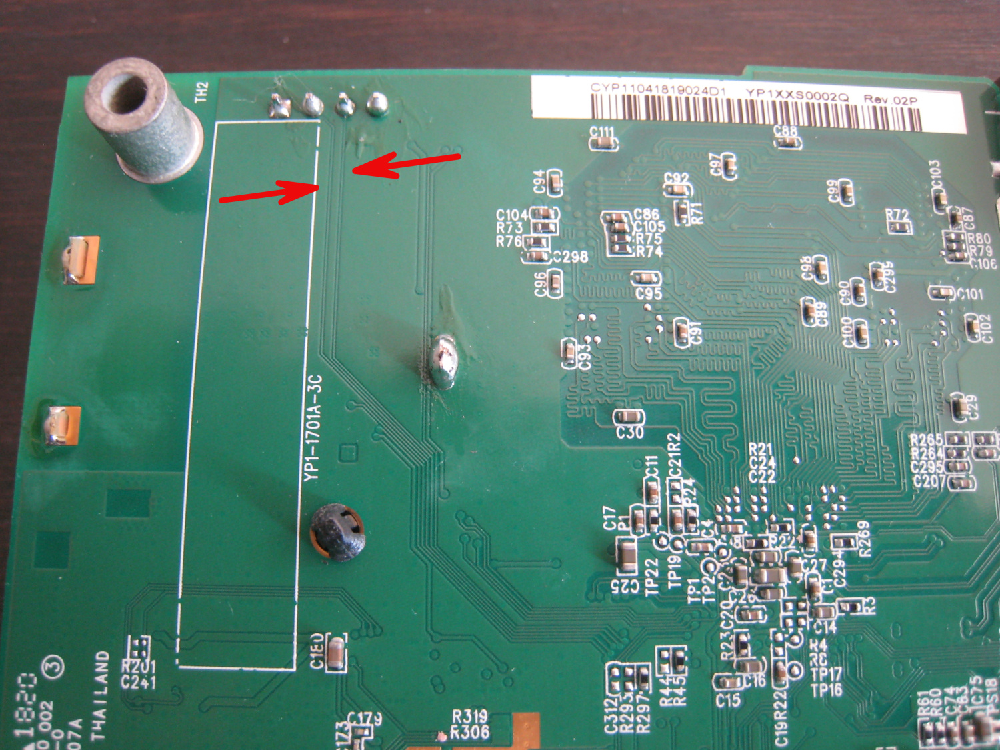
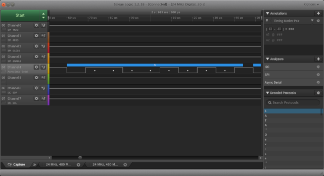

Recently I had access to an Ibi to play around with. The Ibi is a networked media storage device from Sandisk, which is now part of Western Digital. Sandisk bills the Ibi as a "personal cloud for your photos and videos." However, you can only use it with their Ibi smartphone app, and that app requires a ridiculous amount of permissions -- you might as well install a backdoor on your phone. I wanted to see what made the Ibi tick, and if it could be customized.
On the outside, the Ibi has a USB 3.0 port, power jack, and LED. There is no ethernet port, only WiFi, and no video output. Beyond that it's a black box (figuratively speaking, as it has a white case). What I needed was a serial UART (universal asynchronous receiver-transmitter) connection to see device startup messages and information about its configuration. Many routers, switches, and other embedded devices have some sort of UART capability for troubleshooting and diagnostic purposes, and I hoped the Ibi would be the same.
I opened up the case, and the Ibi's innards slid out easily enough. There was a main PCB with the hard drive underneath:

Of most interest was the 4-pin header at J1 (circled in the image above), which I suspected was a UART. With the Ibi powered off, I used a multimeter to test J1's pins for ground, which turned out to be pin 4. Pins 2 and 3 had thin traces on the back of the PCB running towards the SoC (see arrows in the image below). These were quite likely the transmit (TX) and receive (RX) pins:

So pin 1 remained as the likely candidate for power (VCC). I powered up the device several times, measuring the voltage on pins 1, 2, and 3. Pins 1 and 3 remained steady at 3.3V, but the voltage on pin 2 fluctuated during startup. This was probably the TX pin shoveling out serial data.
Based on all of this information, at this point I was pretty confident that pin 1 = VCC, pin 2 = TX, pin 3 = RX, and 4 = GND. Before I hooked up my USB-UART adapter though, I used a logic analyzer to confirm my hypothesis. The analyzer's parser showed that there was indeed outgoing data that it could decode on pin 2:

Next, I connected the USB-UART adapter and started screen at the standard 115200 baud rate:
screen /dev/ttyUSB0 115200
I powered up the board, and was greeted with a stream of text as U-Boot and the kernel did their thing:
[sid]delta long!!11250
[sid]delta long!!11250
C1:80000000
C2
?
C3h
hwsetting size: 000005EC
C4
f
5-5
Goto FSBL: 0x10100000
[*** Output truncated for brevity ***]
CPU : Cortex-A53 quad core - AARCH32
Board: Realtek QA Board
DRAM: 1 GiB
Watchdog: Disabled
Cache: Enabled
Non-Cache Region: 1 MB@0x07900000
nor flash id [0x00ef4014]
sector 256k en: 0
sector 64k en: 1
sector 32k en: 1
sector 4k en: 1
page_program : 1
max capacity : 0x00100000
spi type name : WINBOND_W25Q80BV_8Mbit
[SATA] enable SATA interface
[SATA] spread-spectrum disable
Factory: NOR
Factory: pp:0, seq#:0x10, size:0x2800
[*** Output truncated for brevity ***]
[ 0.000000] Booting Linux on physical CPU 0x0
[ 0.000000] Initializing cgroup subsys cpuset
[ 0.000000] Initializing cgroup subsys cpu
[ 0.000000] Initializing cgroup subsys cpuacct
[ 0.000000] Linux version 4.1.17 (build@build-yocto2) (gcc version 4.9.4 20150629 (prerelease) (Realtek ASDK64-4.9.4p1 Build 2285) ) #1 SMP PREEMPT Wed Jul 24 17:13:01 PDT 2019 (commit id:a61c128eddbd2d423fca8adfe4ee1c2aaa8ee6df)
[ 0.000000] CPU: AArch64 Processor [410fd034] revision 4
After startup completed, I arrived at a shell prompt as the root user:
root@yodaplus32_mini:/ #
So the UART gave me what I needed -- visibility into the startup process, and a shell for looking around the filesystem. It turns out the Ibi uses a two-stage U-Boot loading process and runs Android. There is no SSH server (or even a text editor) installed, so it's a pretty bare-bones OS installation.
The bootup process indicates the CPU is a quad-core A53 ARM processor; looking at the board under the heatsink reveals a Realtek RTD1295 SoC. Unfortunately, Linux kernel support for the Realtek RTD1295 is patchy, though work appears to be picking up in that area. Hopefully in the near future, it will be possible to boot a vanilla kernel on the Ibi and get a full Linux distro running on it, as opposed to a locked-down Android install.